1016C10 cylinder head - r + r and replace gasket
- Path
- Procedures > 10 ENGINE > 1016 CYLINDER HEAD/S > 1016C cylinder head - remove + re-fit > 1016C10 cylinder head - r + r and replace gasket
- Kind
- repair procedure (removal / refitting; the operation number is the code)
- Applies to
- engines: 1.6 TS , 1.8 TS, 2.0 JTS, 1.9 JTD 8v , 1.9 JTD 16v, 2.0 JTS, 2.4 JTD 10v, 2.4 JTD 20v; all production periods
- Interactive page
- https://sloeber94.github.io/elrnDB-a156/en/#/3237654
Applies to: engines: 1.6 TS , 1.8 TS; all production periods
 Removing
Removing
 Refitting
RefittingPosition the vehicle on the ramp.
Disconnect the battery negative (-) terminal.
 | Name | Connector |
|---|---|---|
- | Battery |
4450B10 Front WHEEL (one) - R.R. .
7055B64 Engine compartment DUST shield in front wheel arch (one), left or right - R.R. .
7055B54 under-engine guard - r r .
1016A40 ignition coil cover on cylinder head- r+r .
5510C14 ignition coil/s - r+r .
1016A20 single cam cover - r + r and replace gasket .
1056B60 single fuel manifold pipe, with injectors - r + r .
1048A34 sleeve(s) from flow meter to air supply capacity case - r + r .
Applies to: engines: 1.6 TS ; all production periods
1072B50 sleeves connecting air capacity box to inlet manifold is - r+r .
Applies to: engines: 1.8 TS; all production periods
Applies to: engines: 1.6 TS , 1.8 TS; all production periods
1092G10 single engine belt r r .
1092G20 engine component single belt fixed tensioner - one - r + r .
1092A12 crankshaft pulley - r+r for versions with air conditioner .
Applies to: all engines; all production periods
Applies to: engines: 1.6 TS , 1.8 TS; all production periods
1088D10 lower sleeve for coolant outlet from radiator - r + r .
1. Press the two rapid attachment springs by hand and move the lower radiator hose.
Collect the coolant
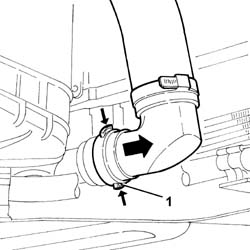
Applies to: engines: 1.6 TS , 1.8 TS; all production periods
1. Undo the nuts (1a) and disconnect the front section of the exhaust pipe (1b) from the manifold.
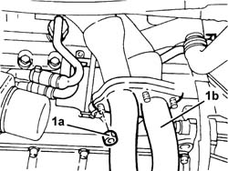
Applies to: engines: 1.6 TS , 1.8 TS; all production periods
1. Undo the nuts (1a) and remove the heat shield (1b) from the exhaust manifold.
2. Undo the bolt (2a) and disconnect the engine oil dipstick (2b) from the cylinder head.
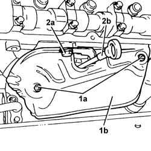
Applies to: engines: 1.6 TS , 1.8 TS; all production periods
1. Undo the bolts for the coolant supply pipe to the engine oil heat exchanger.
2. Undo the connector for the coolant outlet pipe from the enigne oil heat exchanger.
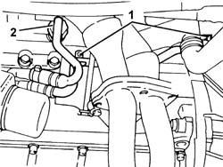
Applies to: engines: 1.6 TS , 1.8 TS; all production periods
1. Disconnect the electrical connection from the engine coolant temperature sensor.
| Name | Connector |
|---|---|---|
1 | Engine temperature sensor |
2. Disconnect the electrical connection from the combined sender unit for the engine coolant temperature gauge and warning light.
| Name | Connector |
|---|---|---|
2 | Coolant temperature sender unit |
3. Disconnect, from the thermostat, the coolant supply pipe to the climate control system heater.
4. Disconnect the coolant supply pipe to the radiator from the thermostat.
5. Disconnect the coolant supply pipe to the engine oil heat exchanger from the thermostat.
6. Disconnect the coolant supply pipe to the butterfly casing/coolant reservoir from the thermostat.
7. Disconnect the coolant return pipe from the climate control system heater from the water pump rigid inlet pipe.
8. Disconnect the coolant return pipe from the radiator from the water pump rigid inlet pipe.
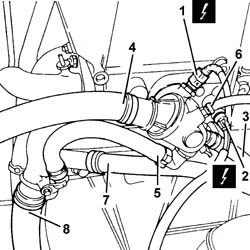
Applies to: engines: 1.6 TS , 1.8 TS; all production periods
1. Disconnect the supply pipe from the water pump rigid inlet pipe.
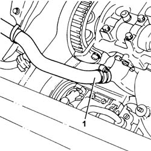
Applies to: engines: 1.6 TS , 1.8 TS; all production periods
1. Undo the bolts (1a) and remove the cylinder head (1b).
2. Remove the cylinder head gasket.
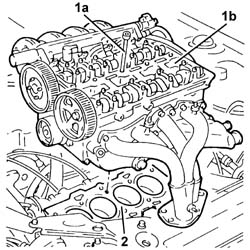
Applies to: engines: 1.6 TS , 1.8 TS; all production periods
Refitting
RemovingFit a new cylinder head gasket.
Position the cylinder head on the cylinder block, taking care that the camshafts are positioned with the front cams facing outwards (valves closed).
1. Tighten the bolts (1a) fixing the cylinder head to the recommended torque using the angular tightening tool (1b).
 | Fastening | Component | Ø | Value (daNm) |
|---|---|---|---|---|
1a | Bolt | CYLINDER HEAD | M10 | 2.0 + 2.0 + 90° + 90° + 90° |
 | Name | Country |
|---|---|---|
1b | Protractor | 1.820.277.000 |
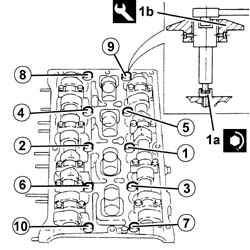
Applies to: engines: 1.6 TS , 1.8 TS; all production periods
Connect the supply pipe to the water pump rigid inlet pipe.
Connect the coolant return pipe from the radiator to the water pump rigid inlet pipe.
Connect the coolant return pipe from the climate control system heater to the water pump rigid inlet pipe.
Connect the coolant supply pipe to the butterfly casing/coolant reservoir to the thermostat.
Connect the coolant supply pipe to the engine oil heat exchanger to the thermostat.
Connect the coolant supply pipe to the radiator to the thermostat.
Connect the coolant supply pipe to the climate control system heater to the thermostat.
Connect the electrical connection to the combined sender unit for the coolant temperature gauge and overheating warning light.
Connect the electrical connection to the engine coolant temperature sensor.
Connect the connector for the engine oil heat exchanger outlet pipe to the water pump rigid inlet pipe.
Tighten the bolts fixing the coolant supply pipe to the engine oil heat exchanger.
Tighten the bolt fixing the engine oil dipstick to the cylinder head.
Fit the heat shield for the exhaust manifold and fix it using the nuts.
Tighten the nuts securing the front section of the exhaust pipe to the manifold to the reommended torque.
| Fastening | Component | Ø | Value (daNm) |
|---|---|---|---|---|
- | Nut | EXHAUST PIPE TO ENGINE | M8 | 2.3 - 2.8 |
Connect the lower coolant outlet hose to the radiator.
Applies to: all engines; all production periods
Applies to: engines: 1.6 TS , 1.8 TS; all production periods
1032D12 timing system protective cover(s) - r + r .
1092A12 crankshaft pulley - r+r for versions with air conditioner .
1092G20 engine component single belt fixed tensioner - one - r + r .
Applies to: engines: 1.6 TS ; all production periods
1072B50 sleeves connecting air capacity box to inlet manifold is - r+r .
Applies to: engines: 1.8 TS; all production periods
Applies to: engines: 1.6 TS , 1.8 TS; all production periods
1048A34 sleeve(s) from flow meter to air supply capacity case - r + r .
1056B60 single fuel manifold pipe, with injectors - r + r .
1016A20 single cam cover - r + r and replace gasket .
5510C14 ignition coil/s - r+r .
1016A40 ignition coil cover on cylinder head- r+r .
7055B54 under-engine guard - r r .
7055B64 Engine compartment DUST shield in front wheel arch (one), left or right - R.R. .
4450B10 Front WHEEL (one) - R.R. .
Supply the engine cooling system with the recommended fluid.
 | Type | Component | Name | Qty. |
|---|---|---|---|---|
- | Fluid [l] | ENGINE COOLING CIRCUIT | Mixture 50% Paraflu11 for Alfa Romeo/distilled water | 6.8 |
Connect the negative (-) battery terminal.
Remove the car from the ramps.
Applies to: engines: 1.9 JTD 8v , 2.4 JTD 10v; all production periods
Removing
Refitting4450B10 Front WHEEL (one) - R.R. .
7055B64 Engine compartment DUST shield in front wheel arch (one), left or right - R.R. .
1092G10 single engine belt r r .
1092A10 Crankshaft services PULLEY - R.R. .
1032D12 timing system protective cover(s) - r + r .
1008C10 power unit upper reaction link r r .
1016A10 sound-proofing cover - r + r .
1008C14 engine link bracket - r r .
1. Undo nuts (1a) and move fuel filter assembly (1b) away from the intake manifold.
2. Undo nuts (2a) and move oil vapour separator (2b) away from the intake manifold.
3. Undo the bolts (3a) and move the fuel return manifold pipe (3b) aside.
4. Push the springs (4a) manually and disconnect the fuel return pipe for lubricating the injectors (4b) from the injectors.
5. Undo the bolts (5a) and remove the coolant supply pipe (5b) to the engine coolant reservoir.
6. Disconnect the electrical connections from the heater plugs.
| Name | Connector |
|---|---|---|
6 | Heater plug |
7. Disconnect the electrical connections from the injectors and move the electrical wiring aside.
| Name | Connector |
|---|---|---|
7 | Injector |
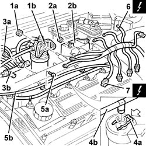
Applies to: engines: 1.9 JTD 8v , 2.4 JTD 10v; all production periods
1. Disconnect the electrical connection from the fuel pressure sensor.
| Name | Connector |
|---|---|---|
1 | Fuel pressure sensor |
2. Loosen the manifold side connector for the supply pipe from the pressure pump to the manifold using a suitable spanner.
3. Disconnect the pressure pump side connector from the pipe leading from the pressure pump using a suitable spanner.
4. Remove the fuel supply pipe from the pressure pump to the fuel manifold.
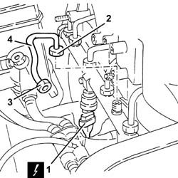
Applies to: engines: 1.9 JTD 8v , 2.4 JTD 10v; all production periods
Raise the car.
1. Disconnect the lower coolant outlet hose from the radiator and drain the engine coolant.
Lower the vehicle.
2. Disconnect the lower radiator coolant outlet hose from the pump rigid coolant inlet pipe and remove it.
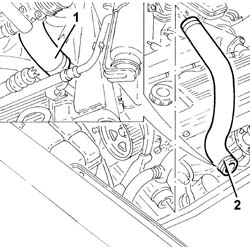
Applies to: engines: 1.9 JTD 8v , 2.4 JTD 10v; all production periods
1. Disconnect the system supply pipe from the water pump rigid inlet pipe.
2. Disconnect the coolant outlet pipe from the water-oil heat exchanger from the water pump rigid inlet pipe.
3. Undo the bolts (3a) and remove the left side protection (3b) for the timing belt.
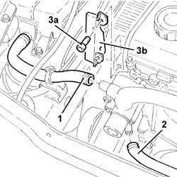
Applies to: engines: 1.9 JTD 8v , 2.4 JTD 10v; all production periods
1. Disconnect the vacuum intake pipe from the EGR valve.
2. Disconnect the coolant return pipe from the climate control system heater from the water pump rigid inlet pipe.
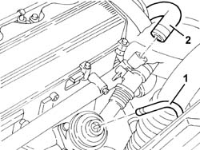
Applies to: engines: 1.9 JTD 8v , 2.4 JTD 10v; all production periods
1. Disconnect the coolant supply hose to the radiator from the thermostat.
2. Disconnect the coolant supply pipe to the water-oil heat exchanger from the thermostat.
3. Disconnect the electrical connection from the engine temperature sensor.
| Name | Connector |
|---|---|---|
3 | Engine temperature sensor |
4. Disconnect the electrical connection from the combined sender unit for the engine coolant temperature gauge and warning light.
| Name | Connector |
|---|---|---|
4 | Coolant temperature sender unit |
5. Disconnect, from the thermostat, the coolant supply pipe to the climate control system heater.
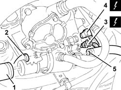
Applies to: engines: 1.9 JTD 8v , 2.4 JTD 10v; all production periods
1. Disconnect the air supply hose from the heat exchanger from the inlet manifold.
2. Disconnect the vacuum intake pipe from the vacuum pump.
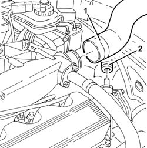
Applies to: engines: 1.9 JTD 8v , 2.4 JTD 10v; all production periods
1. Undo the three bolts indicated securing the exhaust manifold to the turbocharger.
2. Unscrew the turbocharger bracket nuts.
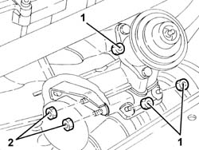
Applies to: engines: 1.9 JTD 8v , 2.4 JTD 10v; all production periods
Raise the car.
Undo the remaining bolt securing the exhaust manifold to the turbocharger.
1. Undo the bolt (1a) and remove the turbocharger mounting bracket.
Undo the bolt securing the rigid mounting to the front exhaust pipe collar.
2. Loosen the nuts for the reinforcement bracket.
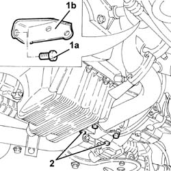
Applies to: engines: 1.9 JTD 8v , 2.4 JTD 10v; all production periods
Lower the vehicle.
1. Undo the bolts (1a) and remove the tappet cover (1b).
2. Undo the bolts securing the pressure pump mounting to the inlet manifold.
3. Undo the bolts (3a) and remove the complete cylinder head (3b).
4. Remove the cylinder head gasket.
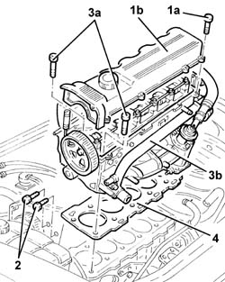
Applies to: engines: 1.9 JTD 8v , 2.4 JTD 10v; all production periods
Refitting
RemovingFit a new cylinder head gasket on the cylinder block/crankcase, taking care that it is the same size as the one removed.
Position the cylinder head on the crankcase.
Applies to: engines: 1.9 JTD 8v ; all production periods
1. Tighten the bolts securing the cylinder head to the cylinder block/crankcase to the recommended torque following the order shown in the diagram and using the angular tightening tool.
| Fastening | Component | Ø | Value (daNm) |
|---|---|---|---|---|
1 | Bolt | CYLINDER HEAD | M10 | 2.0+4.5+90°+90°+90° |
| Name | Country |
|---|---|---|
1 | Protractor | 1.860.942.000 |
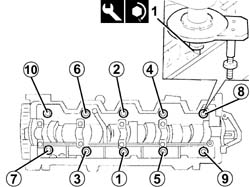
Applies to: engines: 2.4 JTD 10v; all production periods
1. Tighten the bolts securing the cylinder head to the cylinder block/crankcase to the recommended torque following the order shown in the diagram and using the angular tightening tool.
| Fastening | Component | Ø | Value (daNm) |
|---|---|---|---|---|
1 | Bolt | CYLINDER HEAD | M10 | 2.0+4.5+90°+90°+90° |
| Name | Country |
|---|---|---|
1 | Protractor | 1.860.942.000 |
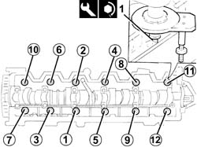
Applies to: engines: 1.9 JTD 8v , 2.4 JTD 10v; all production periods
Tighten the bolts securing the pressure pump mounting to the inlet manifold to the recommended torque.
| Fastening | Component | Ø | Value (daNm) |
|---|---|---|---|---|
- | Bolt | INJECTION PRESSURE PUMP SUPPORT | M8 | Intake manifold side 2.1 - 2.6 |
Fit the tappet cover and fix it tightening the bolts to the recommended torque.
| Fastening | Component | Ø | Value (daNm) |
|---|---|---|---|---|
- | Bolt | CAM COVER | M6 | 0.8 ÷ 1.0 |
Tighten the nuts for the reinforcement bracket.
Tighten the bolt securing the rigid mounting to the front exhaust pipe collar.
Fit the turbocharger bracket and secure it to the crankcase using the bolts.
Tighten the bolt securing the exhaust manifold to the turbocharger to the recommended torque.
| Fastening | Component | Ø | Value (daNm) |
|---|---|---|---|---|
- | Bolt | TURBOCHARGER | M8 | (Exhaust manifold side) 2.1 - 2.6 |
Lower the vehicle.
Tighten the nuts securing the bracket to the turbocharger.
Tighten the remaining bolts securing the exhaust manifold to the turbocharger to the recommended torque.
| Fastening | Component | Ø | Value (daNm) |
|---|---|---|---|---|
- | Bolt | TURBOCHARGER | M8 | (Exhaust manifold side) 2.1 - 2.6 |
Connect the vacuum intake pipe to the vacuum pump.
Conect the air supply hose from the heat exchanger to the inlet manifold.
Connect the coolant supply pipe to the climate control system heater to the thermostat.
Connect the electrical connection to the combined sender unit for the coolant temperature gauge and overheating warning light.
Connect the electrical connection to the engine temperature senor.
Connect the coolant supply hose to the water-oil heat exchanger to the thermostat.
Connect the coolant supply hose to the radiator to the thermostat.
Connect the coolant return pipe from the climate control system heater to the water pump rigid inlet pipe.
Connect the vacuum intake pipe to the E.G.R. valve.
Fit the left side protection for the timing belt and fix it using the bolts.
Connect the coolant outlet pipe from the water-oil heat exchanger to the water pump rigid inlet pipe.
Conect the system supply pipe to the water pump rigid inlet pipe.
Fit the coolant lower outlet hose from the radiator and connect to the water pump rigid inlet pipe.
Raise the car.
Connect the lower coolant outlet hose to the radiator.
Lower the vehicle.
1. Place the pipe from the pressure pump to the single fuel manifold back in its housing and fix it using the connectors without tightening them.
2. Tighten the connector for the pipe from the pressure pump to the fuel manifold, pump side, to the recommended torque using a suitable spanner.
| Fastening | Component | Ø | Value (daNm) |
|---|---|---|---|---|
2a | Connector | PRESSURE PUMP LINE TO FUEL MANIFOLD | M12 | (Pressure pump side) 2.2 |
3. Tighten the connector for the pipe from the pressure pump to the fuel manifold, fuel manifold side, to the recommended torque using a suitable spanner.
| Fastening | Component | Ø | Value (daNm) |
|---|---|---|---|---|
2a | Connector | PRESSURE PUMP LINE TO FUEL MANIFOLD | M14 | (Fuel manifold side) 2.2 |
4. Connect the electrical connection to the fuel pressure sensor.
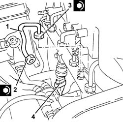
Applies to: engines: 1.9 JTD 8v , 2.4 JTD 10v; all production periods
Place the electrical wiring back in its housing and connect the electrical connections to the injectors.
Connect the electrical connections to the heater plugs.
Place the coolant supply pipe to the engine cooling system reservoir back in its housing and fix it using the bolts.
Position the connectors for the fuel return pipe for lubricating the injectors in the corresponding housings of the injectors and fully insert them until the click of the spring is heard.
Place the fuel return manifold pipe back in its housign and secure it using the bolts.
Place the oil vapour separator back in its housing and fix it to the inlet manifold using the nuts.
Place the fuel filter back in its housing and fix it to the inlet manifold using the nuts.
1008C14 engine link bracket - r r .
1016A10 sound-proofing cover - r + r .
1008C10 power unit upper reaction link r r .
1032D12 timing system protective cover(s) - r + r .
1092A10 Crankshaft services PULLEY - R.R. .
1092G10 single engine belt r r .
7055B64 Engine compartment DUST shield in front wheel arch (one), left or right - R.R. .
Applies to: engines: 1.9 JTD 16v; all production periods
Removing
RefittingPosition the vehicle on the ramp.
Ensure that the ignition key is in the OFF position, then disconnect the negative battery terminal (-).
| Name | Connector |
|---|---|---|
- | Battery |
Proceed with removal 1016A10 sound-proofing cover - r + r .
Proceed with removal 1008C10 power unit upper reaction link r r .
Proceed with removal 1060G80 ds electric injection control unit - r r .
Proceed with removal 4450B04 right front wheel r r .
Proceed with removal 7055B54 under-engine guard - r r .
Proceed with removal - 7055B91 Right front WHEEL ARCH LINER - R.R. .
Proceed with removal 1092G10 single engine belt r r .
Proceed with removal 1092A10 Crankshaft services PULLEY - R.R. .
Proceed with removal 1092G20 engine component single belt fixed tensioner - one - r + r .
Proceed with removal 1032D12 timing system protective cover(s) - r + r .
1. Undo the bolts (1a) and (1b), then remove the bracket on the engine for the reaction rod (1c).
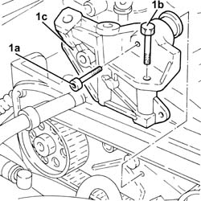
Applies to: engines: 1.9 JTD 16v; all production periods
1. Loosen the nut securing the timing belt mobile tensioner.
2. Prise off and remove the timing belt.
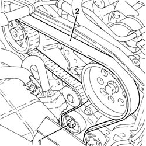
Applies to: engines: 1.9 JTD 16v; all production periods
1. Loosen the band and disconnect the lower radiator coolant outlet hose from the radiator, water pump rigid inlet pipe end.
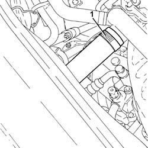
Applies to: engines: 1.9 JTD 16v; all production periods
1. Disconnect the electrical connections from the injectors.
| Name | Connector |
|---|---|---|
1 | Injector |
2. Disconnect the electrical connection from the cam angle sensor.
| Name | Connector |
|---|---|---|
2 | Timing sensor |
3. Disconnect the electrical connection for the air conditioning compressor.
| Name | Connector |
|---|---|---|
3 | Air conditioning compressor "on" electromagnet |
Release the electrical wiring from the band on the timing cover.
4. Undo the bolts fastening the cable duct and move the electrical wiring aside.
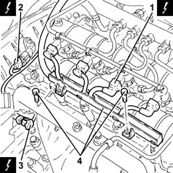
Applies to: engines: 1.9 JTD 16v; all production periods
1. Push clips (1a) by hand and disconnect the pipe from the injectors to the fuel recovery manifold (1b), injectors side and move it aside.
2. Undo the connectors (2a), (2b) and remove the pipe from the fuel manifold to the injectors (2c).
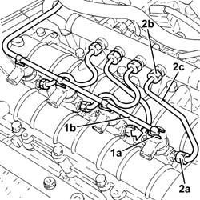
Applies to: engines: 1.9 JTD 16v; all production periods
1. Undo the nuts fixing the injector brackets.
2. Remove the injectors (2a) complete with bracket using the tool (2b).
| Name | Country |
|---|---|---|
2b | Extractor | 1.870.897.300 |
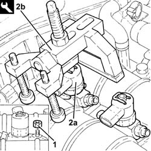
Applies to: engines: 1.9 JTD 16v; all production periods
1. Undo the connectors (1a), (1b) and remove the pipe from the pressure pump to the fuel manifold (1c).
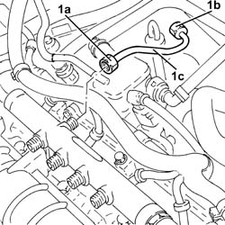
Applies to: engines: 1.9 JTD 16v; all production periods
1. Disconnect the electrical connection from the fuel pressure sensor.
| Name | Connector |
|---|---|---|
1 | Fuel pressure sensor |
2. Undo the bolts (2a) and remove the single fuel manifold pipe (2b) complete with fuel pressure sensor (2c).
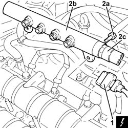
Applies to: engines: 1.9 JTD 16v; all production periods
Proceed with removal 5530B10 battery - r+r .
1. Disconnect the hose from the rigid vacuum pipe leading to the turbocharger vane actuator solenoid.
2. Undo the bolts (2a) and move the rigid vacuum pipe leading to the turbocharger vane actuator solenoid (2b) to one side.
3. Loosen the band and disconnect the vacuum pipe from the brake servo.
4. Loosen the band and disconnect the engine oil vapour recovery pipe from the engine oil filler.
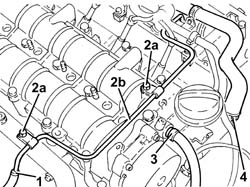
Applies to: engines: 1.9 JTD 16v; all production periods
1. Disconnect the electrical connection from the engine coolant temperature sensor.
| Name | Connector |
|---|---|---|
1 | Engine temperature sender unit |
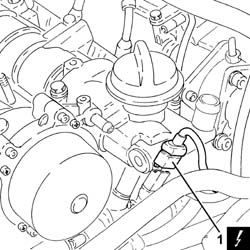
Applies to: engines: 1.9 JTD 16v; all production periods
1. Undo the bolts (1a) and remove the engine oil filler (1b).
2. Remove the gasket.
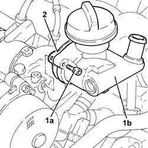
Applies to: engines: 1.9 JTD 16v; all production periods
1. Undo bolts (1a) and remove vacuum unit (1b).
2. Remove the gasket.
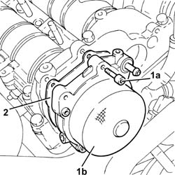
Applies to: engines: 1.9 JTD 16v; all production periods
1. Undo the bolts (1a), (1b), and remove the camshaft housing assembly (1c).
2. Remove the gasket.
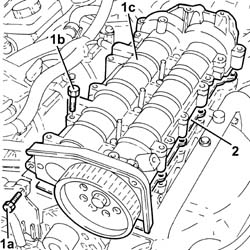
Applies to: engines: 1.9 JTD 16v; all production periods
1. Remove the valve rocker arms.
2. Remove the hydraulic tappets.
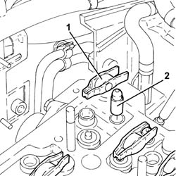
Applies to: engines: 1.9 JTD 16v; all production periods
1. Disconnect the electrical connections from the heater plugs.
| Name | Connector |
|---|---|---|
1 | Heater plug |
2. Undo and remove the heater plugs.
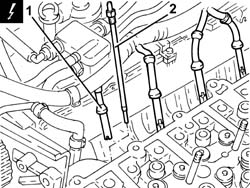
Applies to: engines: 1.9 JTD 16v; all production periods
1. Disconnect the electrical connection from the air flow meter.
| Name | Connector |
|---|---|---|
1 | Air flow meter |
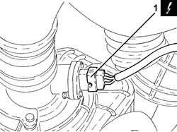
Applies to: engines: 1.9 JTD 16v; all production periods
1. Disconnect the electrical connection from the E.G.R. valve.
| Name | Connector |
|---|---|---|
1 | EGR solenoid |
2. Disconnect the electrical connection from the excess pressure sensor.
| Name | Connector |
|---|---|---|
2 | Turbocharging sensor |
Release the wiring from the bands near the thermostat.
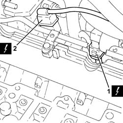
Applies to: engines: 1.9 JTD 16v; all production periods
1. Loosen the band and disconnect the coolant return pipe from the engine coolant reservoir, thermostat side.
2. Loosen the band and disconnect the coolant outlet pipe from the cylinder head, engine coolant return pipe to the coolant reservoir side.
3. Loosen the band and disconnect the flexible coolant return pipe from the rigid coolant return pipe to the engine coolant reservoir.
4. Undo the bolts (4a) and remove hose (4b) carrying coolant to the coolant supply reservoir.
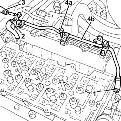
Applies to: engines: 1.9 JTD 16v; all production periods
1. Loosen the band and disconnect the air intake hose from the connector on the throttle casing.
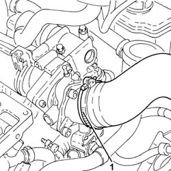
Applies to: engines: 1.9 JTD 16v; all production periods
1. Undo the bolts (1a) and remove the connector on the throttle body (1b) complete with gasket (1c).
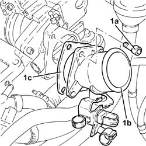
Applies to: engines: 1.9 JTD 16v; all production periods
1. Disconnect the vacuum pipe from the pneumatic valve on the throttle body.
2. Undo the bolts (2a) and remove the electropneumatically controlled throttle body (2b) complete with gasket (2c).
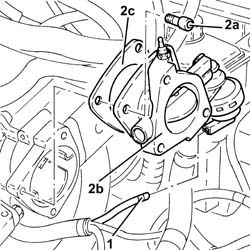
Applies to: engines: 1.9 JTD 16v; all production periods
Disconnect the vacuum pipe from the three-way connector on the brake servo vacuum intake pipe.
Disconnect the intermediate coupling for the vacuum pipe for the turbocharger vane position control actuator solenoid valve.
1. Loosen the band and disconnect the upper coolant inlet hose to the radiator, thermostat side.
2. Loosen the band and disconnect the coolant return pipe to the climate control heater, thermostat side.
3. Loosen the band and disconnect the coolant supply pipe to the water/exhaust gas heat exchanger for the E.G.R. system, thermostat side.
4. Loosen the band and disconnect the coolant outlet pipe from the water/exhaust gas heat exchanger for the E.G.R. system, heat exchanger side.
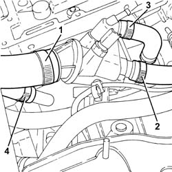
Applies to: engines: 1.9 JTD 16v; all production periods
1. Undo the bolts (1a) and remove the thermostat (1b) complete with O-Ring (1c).
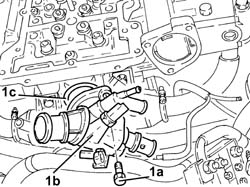
Applies to: engines: 1.9 JTD 16v; all production periods
1. Loosen the collar fastening the E.G.R. system water/exhaust gas heat exchanger, exhaust gas inlet pipe side.
2. Undo the bolts fixing the exhaust gas outlet pipe to the water/exhaust gas heat exchanger for the E.G.R. system, E.G.R. system solenoid valve side.
3. Undo the bolts (3a) and remove the E.G.R. system water/exhaust gas heat exchanger (3b) complete with exhaust gas pipe (3c).
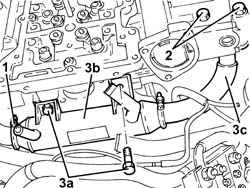
Applies to: engines: 1.9 JTD 16v; all production periods
1. Undo the nuts (1a) and move the oil vapour recovery pipe mounting bracket (1b) aside.
2. Undo the bolts (2a) and remove the E.G.R. system solenoid valve (2b).
3. Remove the gasket.
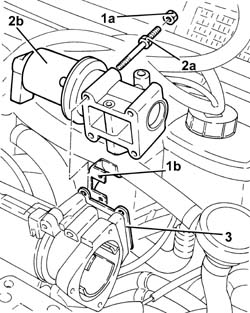
Applies to: engines: 1.9 JTD 16v; all production periods
1. Disconnect the rapid attachment for the fuel return pipe from the fuel filter, return manifold pipe side.
2. Disconnect the rapid attachment for the fuel return pipe to the tank, return manifold pipe side.
3. Loosen the band and disconnect the fuel return pipe from the pressure pump, fuel return manifold pipe side.
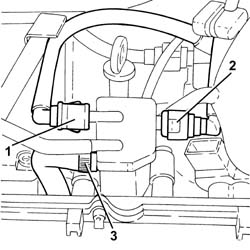
Applies to: engines: 1.9 JTD 16v; all production periods
1. Undo the bolts (1a) and remove the fuel return manifold pipe (1b) complete with the pipe from the injectors to the fuel recovery manifold (1c).
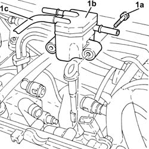
Applies to: engines: 1.9 JTD 16v; all production periods
1. Undo the bolt fixing the guide pipe for the engine oil dipstick to the pressure pump mounting.
2. Disconnect the electrical connection from the fuel pressure regulator.
| Name | Connector |
|---|---|---|
2 | Fuel pressure regulator |
Release the electrical wiring from the band and move it to the side.
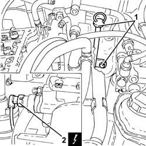
Applies to: engines: 1.9 JTD 16v; all production periods
1. Loosen the band and disconnect the condensation oil recovery pipe from the crankcase sump.
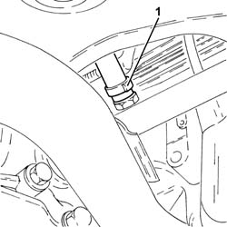
Applies to: engines: 1.9 JTD 16v; all production periods
1. Loosen the band and disconnect the oil vapour recovery pipe from the separator.
2. Loosen the band and disconnect the oil vapour recirculation pipe from separator.
Applies to: engines: 1.9 JTD 16v; all production periods
Disconnect the electrical connection from the solenoid on the vacuum tank.
| Name | Connector |
|---|---|---|
- | Butterfly casing solenoid valve |
1. Undo the bolts (1a) and remove the mounting bracket (1b) complete with oil vapour separator (1c) and vacuum reservoir (1d).
Applies to: engines: 1.9 JTD 16v; all production periods
1. Stop the pressure pump pulley from rotating using two bolts.
2. Undo the pressure pump pulley nut.
Undo the two bolts fitted previously to stop the rotation of the pressure pump pulley.
Applies to: engines: 1.9 JTD 16v; all production periods
1. Remove the pressure pump pulley (1a) using the tool (1b).
| Name | Country |
|---|---|---|
1b | Extractor | 1.860.854.001 |
Applies to: engines: 1.9 JTD 16v; all production periods
1. Undo nuts (1a) and remove pressure pump (1b) from its mount.
Applies to: engines: 1.9 JTD 16v; all production periods
1. Disconnect the electrical connection from the engine oil pressure warning light switch.
| Name | Connector |
|---|---|---|
1 | Engine oil pressure sensor |
2. Disconnect the electrical connection for the engine oil level sensor.
| Name | Connector |
|---|---|---|
2 | Engine oil level sensor |
3. Disconnect the electrical connection for the rpm sensor.
| Name | Connector |
|---|---|---|
3 | Rpm sensor |
Applies to: engines: 1.9 JTD 16v; all production periods
1. Disconnect the earth lead from the alternator.
| Name | Connector |
|---|---|---|
1 | Alternator |
2. Disconnect the earth lead from the starter motor.
| Name | Connector |
|---|---|---|
2 | Starter' motor |
Applies to: engines: 1.9 JTD 16v; all production periods
1. Disconnect the electrical connection from the pre-heating control unit.
| Name | Connector |
|---|---|---|
1 | Plug preheating control unit |
Applies to: engines: 1.9 JTD 16v; all production periods
1. Undo the bolts (1a) and remove the power steering pump drive pulley (1b).
Applies to: engines: 1.9 JTD 16v; all production periods
1. Undo the bolts securing the power steering pump to its mounting.
Applies to: engines: 1.9 JTD 16v; all production periods
Remove the guide tube complete with engine oil dipstick.
1. Undo the bolts (1a) and remove the pressure pump mounting (1b).
Applies to: engines: 1.9 JTD 16v; all production periods
1. Undo the nuts (1a) and remove the air chamber assembly (1b) complete with gasket (1c).
Applies to: engines: 1.9 JTD 16v; all production periods
1. Loosen the band and disconnect the system supply pipe from the water pump rigid inlet pipe.
2. Loosen the band and disconnect the coolant outlet pipe from the climate control heater, water pump rigid inlet pipe side.
3. Undo the bolts (3a) and remove the coolant inlet rigid pipe to the water pump (3b).
Remove the gasket.
Applies to: engines: 1.9 JTD 16v; all production periods
1. Undo the bolts (1a) and remove the exhaust manifold heat shield (1b).
Applies to: engines: 1.9 JTD 16v; all production periods
1. Undo the nuts (1a) and remove the upper exhaust manifold heat shield (1b).
Applies to: engines: 1.9 JTD 16v; all production periods
1. Undo the nuts fixing the front section of the exhaust pipe to the catalytic pre-converter.
2. Undo the nuts fixing the front section of the exhaust pipe to the catalytic converter.
3. Remove the front exhaust pipe section complete with seals.
Applies to: engines: 1.9 JTD 16v; all production periods
1. Disconnect the vacuum pipe from the turbocharger variable geometry control actuator.
2. Loosen the band and disconnect the air supply hose between the turbocharger and the heat exchanger, turbocharger side.
3. Loosen the band and disconnect the corrugated air intake sleeve to the turbocharger, turbocharger side.
Applies to: engines: 1.9 JTD 16v; all production periods
1. Undo the bolts (1a) and the nuts (1b) fixing the catalytic preconverter mounting bracket.
2. Undo the bolts securing the engine oil return pipe from the turbocharger, engine crankcase side.
Applies to: engines: 1.9 JTD 16v; all production periods
1. Undo the connector (1a) and disconnect engine oil supply pipe to the turbocharger (1b), crankcase side.
Applies to: engines: 1.9 JTD 16v; all production periods
1. Loosen the collar (1a) and remove the catalytic preconverter (1b).
2. Keep the catalytic preconverter mounting bracket.
Applies to: engines: 1.9 JTD 16v; all production periods
1. Undo the nuts (1a) and remove the exhaust manifold (1b) complete with turbocharger (1c).
2. Remove the exhaust manifold gasket.
Applies to: engines: 1.9 JTD 16v; all production periods
1. Undo the bolts (1a) and remove the lower cylinder head assembly (1b).
2. Remove the cylinder head gasket.
3. Remove the locating bushes.
Applies to: engines: 1.9 JTD 16v; all production periods
Refitting
RemovingPosition the cylinder head centring bushes on the cylinder block/crankcase.
Fit a new cylinder head gasket, taking care that it is the same thickness as the old one.
Position the cylinder head on the crankcase.
1. Tighten the cylinder head bolts (1a) to the recommended torque using the angular tightening tool (1b).
| Fastening | Component | Ø | Value (daNm) |
|---|---|---|---|---|
1a | Bolt | CYLINDER HEAD | M12 | (Engine block side) 2.0 + 4.5 + 90° + 90° + 90° |
| Name | Country |
|---|---|---|
1b | Protractor | 1.860.942.000 |
Applies to: engines: 1.9 JTD 16v; all production periods
1. Place an exhaust manifold gasket in the housing.
2. Place the exhaust manifold (2a) complete with turbocharger (2b), back in its housing and fix it tightening the nuts (2c) to the recommended torque.
| Fastening | Component | Ø | Value (daNm) |
|---|---|---|---|---|
2c | Nut | EXHAUST MANIFOLD/S | M8 | (Cylinder head side) 2.3 ÷ 2.8 |
Applies to: engines: 1.9 JTD 16v; all production periods
Place the catalytic preconverter complete with mounting back in its housing and fasten it to the turbocharger using the collar.
1. Connect the engine oil delivery pipe to the turbocharger (1a), crankcase side, and tighten the connector (1b) to the recommended torque.
| Fastening | Component | Ø | Value (daNm) |
|---|---|---|---|---|
1b | Connector | OIL DELIVERY PIPE TO TURBO | M10 | (Engine crankcase side) 1.4 ÷ 1.7 |
Applies to: engines: 1.9 JTD 16v; all production periods
Tighten the bolt fixing the enigne oil return pipe from the turbocharger, engine crankcase side.
Tighten the bolts and the nuts fixing the catalytic preconverter mounting bracket.
Connect the corrugated air intake sleeve to the turbocharger, turbocharger side, and tighten the band.
Connect the air supply hose between the turbocharger and the heat exchanger, turbocharger side, and secure with a band.
Connect the vacuum pipe from the turbocharger variable geometry control actuator.
1. Place the front section of the exhaust pipe with gaskets back in its housing.
2. Tighten the nuts securing the exhaust pipe front section to the catalytic converter to the specified torque.
| Fastening | Component | Ø | Value (daNm) |
|---|---|---|---|---|
2 | Nut | PRE-CAT CONVERTOR/CAT CONVERTOR PIPE | M8 | (Catalytic converter side) 2.3 ÷ 2.8 |
3. Tighten the nuts fixing the front section of the exhaust pipe to the catalytic preconverter to the recommended torque.
| Fastening | Component | Ø | Value (daNm) |
|---|---|---|---|---|
3 | Nut | PRE-CAT CONVERTOR/CAT CONVERTOR PIPE | M8 | (Catalyitic preconverter side) 2.3 ÷ 2.8 |
Applies to: engines: 1.9 JTD 16v; all production periods
Place the upper exhaust manifold heat shield back in its housing and fix it using the nuts.
Place the lower exhaust manifold heat shield back in its housing and fix it using the bolts.
Place the water pump rigid inlet pipe, complete with gasket, back in its housing and secure it with the bolts.
Connect the coolant return hose from the climate control heater on the side of the rigid inlet pipe to the water pump and do up the band.
Connect the system supply pipe to the water pump rigid inlet pipe and tighten the band.
1. Refit air chamber (1a) complete with gasket (1b) and secure it by tightening nuts (1c) to the recommended torque.
| Fastening | Component | Ø | Value (daNm) |
|---|---|---|---|---|
1c | Bolt | INLET MANIFOLD | M8 | Cylinder head side) 2.3 ÷ 2.8 |
Applies to: engines: 1.9 JTD 16v; all production periods
1. Place the pressure pump support (1a) back in its housing and secure it tightening the bolts (1b).
| Fastening | Component | Ø | Value (daNm) |
|---|---|---|---|---|
1b | Bolt | INJECTION PRESSURE PUMP MOUNT | M8 | (Engine crankcase side) 2.3 ÷ 2.8 |
Applies to: engines: 1.9 JTD 16v; all production periods
Refit the guide tube and engine oil dipstick.
1. Place the power assisted steering pump back in its housing and fix it tightening the bolts to the recommended torque.
| Fastening | Component | Ø | Value (daNm) |
|---|---|---|---|---|
1 | Bolt | POWER STEERING PUMP | M8 | (Support side) 2.3 ÷ 2.8 |
Applies to: engines: 1.9 JTD 16v; all production periods
1. Place the power assisted steering pump pulley (1a) back in its housing and fix it tightening the bolts (1b) to the recommended torque.
| Fastening | Component | Ø | Value (daNm) |
|---|---|---|---|---|
1b | Bolt | POWER STEERING PUMP DRIVE PULLEY | M8 | (Power assisted steering pump side 23 28 |
Applies to: engines: 1.9 JTD 16v; all production periods
Connect the electrical connection to the pre-heating control unit.
Connect the earth lead to the starter motor.
Connect the earth lead to the alternator.
Connect the electrical connection for the rpm sensor.
Connect the electrical connection for the engine oil level sensor.
Connect the electrical connection to the engine oil pressure warning light switch.
1. Fit the clutch pump (1a) back in its housing and tighten the nuts (1b) to the specified torque.
| Fastening | Component | Ø | Value (daNm) |
|---|---|---|---|---|
1b | Nut | PRESSURE PUMP | M8 | (Support side) 2.3 ÷ 2.8 |
Applies to: engines: 1.9 JTD 16v; all production periods
1. Replace the pressure pump pulley in its housing.
2. Stop the pressure pump pulley from rotating using two bolts.
3. Tighten the pressure pump pulley nut to torque.
| Fastening | Component | Ø | Value (daNm) |
|---|---|---|---|---|
3 | Nut | PRESSURE PUMP CONTROL PULLEY | M14 | 4.5 ÷ 5.5 |
Undo the two bolts fitted previously to stop the rotation of the pressure pump pulley.
Applies to: engines: 1.9 JTD 16v; all production periods
Place the mounting bracket complete with oil vapour separator and vacuum reservoir back in its housing and secure it using the bolts.
Connect the electrical connection to the solenoid on the vacuum tank.
Connect the oil vapour recirculation pipe to the separator and tighten the band.
Connect the oil vapour recovery pipe to the separator and tighten the band.
Connect the condensation oil recovery pipe to the crankcase sump and tighten the band.
Place the electrical wiring back in its housing and fix it to the band.
Connect the electrical connection to the fuel pressure regulator.
Tighten the bolt fixing the engine oil dipstick guide pipe to the pressure pump mounting.
Place the fuel return manifold pipe complete with the pipe from the injectors to the fuel recovery manifold back in its housing and secure it using the bolts.
Connect the fuel return pipe to the pressure pump, fuel return manifold pipe side and tighten the band.
Connect the rapid attachment for the fuel return pipe to the tank, fuel return manifold pipe side.
Connect the rapid attachment for the fuel return pipe from the fuel filter, return manifold pipe side.
1. Place the E.G.R. system solenoid valve (1a) complete with gasket (1b) back in its housing and fasten it tightening the bolts (1c) to the recommended torque.
| Fastening | Component | Ø | Value (daNm) |
|---|---|---|---|---|
1c | - | - | - | - |
2. Place the oil vapour recovery pipe mounting bracket (2a) back in its housing and secure it using the nuts (2b).
Applies to: engines: 1.9 JTD 16v; all production periods
1. Place the water/exhaust gas heat exchanger for the E.G.R. system (1a), complete with exhaust gas outlet pipe (1b) back in its housing.
2. Tighten the bolts fixing the exhaust gas outlet pipe to the water/exhaust gas heat exchanger for the E.G.R. system, E.G.R. system solenoid valve side to the recommended torque.
| Fastening | Component | Ø | Value (daNm) |
|---|---|---|---|---|
2 | Bolt | WATER/GAS HEAT EXCHANGER FOR EGR SYSTEM | M8 | (E.G.R.) solenoid valve side 2.3 ÷ 2.8 |
3. Tighten the collar fixing the water/exhaust gas heat exchanger for the E.G.R. system.
Applies to: engines: 1.9 JTD 16v; all production periods
1. Refit thermostat (1a), complete with O-ring (1b) and secure by tightening the bolts (1c) to the recommended torque.
| Fastening | Component | Ø | Value (daNm) |
|---|---|---|---|---|
1c | - | - | - | - |
Applies to: engines: 1.9 JTD 16v; all production periods
Connect the coolant outlet pipe from the E.G.R. water/exhaust gas heat exchanger, heat exchanger side, and tighten the band.
Connect the engine coolant supply pipe to the EGR system water/exhaust gas heat exchanger, thermostat side and tighten the band.
Connect the engine coolant return pipe from the climate control system heater, thermostat side, and tighten the band.
Connect the upper coolant inlet hose to the radiator, thermostat side, and tighten the band.
Connect the intermediate coupling for the vacuum pipe for the turbocharger vane position control actuator solenoid valve.
Connect the vacuum pipe to the three-way connector on the brake servo vacuum intake pipe.
1. Replace the pneumatically-controlled throttle body (1a), complete with gasket (1b), back in its housing and secure by tightening bolts (1c) to the recommended torque.
| Fastening | Component | Ø | Value (daNm) |
|---|---|---|---|---|
1c | - | - | - | - |
2. Connect the vacuum pipe to the pneumatic valve on the throttle body.
Applies to: engines: 1.9 JTD 16v; all production periods
1. Replace the connector on the throttle body (1a), complete with gasket (1b), back in its housing and secure by tightening bolts (1c) to the recommended torque.
| Fastening | Component | Ø | Value (daNm) |
|---|---|---|---|---|
1c | - | - | - | - |
Applies to: engines: 1.9 JTD 16v; all production periods
Connect the air inlet hose to the connector on the throttle casing and tighten the band.
Place the coolant return pipe to the engine cooling system reservoir back in its housing and fix it using the bolts.
Connect the flexible pipe to the coolant return pipe to the engine coolant reservoir and tighten the band.
Connect the coolant oulet pipe from the cylinder head, engine coolant return pipe to the supply reservoir side and tighten the band.
Connect the engine coolant return pipe to the supply reservoir, thermostat side and tighten the band.
Fasten the electrical wiring to the bands near the thermostat.
Connect the electrical connection to the excess pressure sensor.
Connect the electrical connection to the EGR solenoid.
Connect the electrical connection to the air flow meter.
Connect the electrical connection to the turbocharger vane actuator solenoid.
1. Place the heater plugs back in their housings and tighten them to the recommended torque.
| Fastening | Component | Ø | Value (daNm) |
|---|---|---|---|---|
1 | - | GLOW PLUGS | M9 | (Cylinder head side) 0.7 ÷ 0.9 |
2. Connect the electrical connections to the heater plugs.
Applies to: engines: 1.9 JTD 16v; all production periods
Place the hydraulic tappets in their housings.
Place the valve rocker arms back in their housings.
Place the upper cylinder head gasket back in its housing.
1. Remove the plugs (1a) and fit the camshaft timing tools (1b) in the upper cylinder head.
| Name | Country |
|---|---|---|
1b | Gauge | 1.870.986.900 |
Remove the inlet side camshaft timing tool and tighten the plug.
Applies to: engines: 1.9 JTD 16v; all production periods
1. Place the complete upper cylinder head (1a) back in its housing and secure it tightening the bolts (1b) to the recommended torque.
| Fastening | Component | Ø | Value (daNm) |
|---|---|---|---|---|
1b | Bolt | CYLINDER HEAD EXTENSION | M8 | (Cylinder head side 23 28 |
| Fastening | Component | Ø | Value (daNm) |
|---|---|---|---|---|
1b | Bolt | INJECTION PRESSURE PUMP MOUNT | M8 | (Cylinder head side) 2.3 ÷ 2.8 |
2. Loosen the exhaust side camshaft toothed drive pulley fixing bolt.
Applies to: engines: 1.9 JTD 16v; all production periods
1. Undo the bolt for the crankcase front cover shown in the diagram.
Temporarily fit the timing drive belt on the drive pulley.
2. Fit the tool (2a) and secure it using the calibrated screw (2b)
| Name | Country |
|---|---|---|
2a | Template | 1.860.905.000 |
| Name | Country |
|---|---|---|
2b | Calibrated screw | 1.860.905.010 |
Applies to: engines: 1.9 JTD 16v; all production periods
1. Completely fit the timing belt.
2. Use a screwdriver to lever in the hole (2a) until the reference on the tensioner (2b) lines up with the reference hole (2c) and, in this position, tighten the tensioner nut (2d) to torque.
| Fastening | Component | Ø | Value (daNm) |
|---|---|---|---|---|
2d | Nut | MOBILE TIMING TENSIONER | M10 | 4.2 ÷ 5.2 |
3. Tighten the exhaust side camshaft toothed drive pulley fixing bolt to the recommended torque.
| Fastening | Component | Ø | Value (daNm) |
|---|---|---|---|---|
3 | Bolt | TIMING GEAR DRIVEN PULLEYS | M12 | (Exhaust camshaft side) 10.8÷13.2 |
Applies to: engines: 1.9 JTD 16v; all production periods
Remove the timing tools.
| Name | Country |
|---|---|---|
- | Gauge | 1.870.986.900 |
| Name | Country |
|---|---|---|
- | Template | 1.860.905.000 |
| Name | Country |
|---|---|---|
- | Calibrated screw | 1.860.905.010 |
Rotate the crankshaft through two revolutions.
Check once again that the timing is correct by refitting the timing tools.
Check that the tensioning references on the timing belt tensioner are aligned.
Tighten the bolt for the crankcase front cover previously removed.
Tighten the plug in the camshaft housing for fitting the exhaust side timing tool.
1. Place the vacuum unit (1a), complete with gasket (1b), back in its housing and secure it tightening the bolts (1c) to the recommended torque.
| Fastening | Component | Ø | Value (daNm) |
|---|---|---|---|---|
1c | Bolt | BRAKE SERVO VACUUM PUMP | M6 | (Cylinder head side 05 06 50 |
Applies to: engines: 1.9 JTD 16v; all production periods
1. Place the engine oil filler (1a), complete with gasket (1b), back in its housing and secure it tightening the bolts (1c) to the recommended torque.
| Fastening | Component | Ø | Value (daNm) |
|---|---|---|---|---|
1c | Bolt | OIL FILTER FITTING | M6 | (Cylinder head side 08 10 |
Applies to: engines: 1.9 JTD 16v; all production periods
Connect the electrical connection to the engine coolant temperature sensor.
Connect the oil vapour recovery pipe to the engine oil filler and tighten the band.
Connect the vacuum pipe to the brake servo and tighten the band.
Fit the rigid pipe leading to the turbocharger vane actuator solenoid back in its housing and secure with the nuts.
Connect the hose to the rigid vacuum pipe leading to the turbocharger vane actuator solenoid.
Proceed with refitting 5530B10 battery - r+r .
1. Place the single fuel manifold pipe (1a), complete with fuel pressure sensor (1b), back in its housing and secure it tightening the bolts (1c) to the recommended torque.
| Fastening | Component | Ø | Value (daNm) |
|---|---|---|---|---|
1c | Bolt | INJECTOR FUEL MANIFOLD (DIESEL) | M8 | (Camshaft housing side 23 28 |
2. Connect the electrical connection to the fuel pressure sensor.
Applies to: engines: 1.9 JTD 16v; all production periods
1. Place the pipe from the pressure pump to the single fuel manifold back in its housing and fix it using the connectors without tightening them.
2. Tighten the connector for the pipe from the pressure pump to the single fuel manifold, pump side, to the recommended torque using a suitable spanner.
| Fastening | Component | Ø | Value (daNm) |
|---|---|---|---|---|
2 | Connector | PRESSURE PUMP LINE TO FUEL MANIFOLD | M14 | (Pressure pump side 22 24 |
3. Tighten the connector for the pipe from the pressure pump to the single fuel manifold, fuel manifold side, to the recommended torque using a suitable spanner.
| Fastening | Component | Ø | Value (daNm) |
|---|---|---|---|---|
3 | Connector | PRESSURE PUMP LINE TO FUEL MANIFOLD | M14 | (Fuel manifold side 22 24 |
Applies to: engines: 1.9 JTD 16v; all production periods
1. Refit the injectors (1a) complete with brackets and secure by tightening the nuts (1b) to the specified torque.
| Fastening | Component | Ø | Value (daNm) |
|---|---|---|---|---|
1b | Nut | INJECTORS(DIESEL) | M8 | (Camshaft housing side 23 28 |
Applies to: engines: 1.9 JTD 16v; all production periods
1. Fit the new pipes from the fuel manifold to the injectors and secure them using the connectors without tightening them.
2. Tighten the connectors for the pipes from the fuel manifold to the injectors, injector side, to the recommended torque using a suitable spanner.
| Fastening | Component | Ø | Value (daNm) |
|---|---|---|---|---|
2 | Connector | FUEL MANIFOLD LINE TO INJECTORS | M12 | (Injector side 22 24 |
3. Tighten the connectors for the pipes between the fuel manifold and the injectors, fuel manifold side, to the recommended torque using a suitable spanner.
| Fastening | Component | Ø | Value (daNm) |
|---|---|---|---|---|
3 | Connector | FUEL MANIFOLD LINE TO INJECTORS | M12 | Fuel manifold side 22 24 |
4. Connect the pipe from the injectors to the fuel recovery manifold (4a) to the injectors pushing it until the clips (4b) can be heard clicking into place.
Applies to: engines: 1.9 JTD 16v; all production periods
Place the electrical wiring back in its housing and tighten the cable duct fixing bolts.
Fasten the electrical wiring using the band on the timing cover.
Connect the electrical connection to the air conditioner compressor.
Connect the electrical connection to the cam angle sensor
Connect the electrical connections to the injectors.
1. Fit the bracket on the engine for the reaction rod (1a) and fix it tightening the bolts (1b) and (1c) to the recommended torque.
| Fastening | Component | Ø | Value (daNm) |
|---|---|---|---|---|
1b | Bolt | REACTION LINK BRACKET ON ENGINE | M10 | (Cylinder head side), 4.5 ÷ 5.5 |
| Fastening | Component | Ø | Value (daNm) |
|---|---|---|---|---|
1c | Bolt | REACTION LINK BRACKET ON ENGINE | M10 | (Power assisted steering pump mounting side), 4.5 ÷ 5.5 |
Applies to: engines: 1.9 JTD 16v; all production periods
Proceed with refitting 1032D12 timing system protective cover(s) - r + r .
Proceed with refitting 1092G20 engine component single belt fixed tensioner - one - r + r .
Proceed with refitting 1092A10 Crankshaft services PULLEY - R.R. .
Proceed with refitting 1092G10 single engine belt r r .
Proceed with refitting - 7055B91 Right front WHEEL ARCH LINER - R.R. .
Proceed with refitting 7055B54 under-engine guard - r r .
Proceed with refitting 4450B04 right front wheel r r .
Proceed with refitting 1060G80 ds electric injection control unit - r r .
Proceed with refitting 1008C10 power unit upper reaction link r r .
Refill the engine cooling system with coolant 0010T20 coolant change .
Proceed with refitting 1016A10 sound-proofing cover - r + r .
Connect the negative (-) battery terminal.
Remove the car from the ramps.
Applies to: engines: 2.4 JTD 20v; all production periods
Removing
RefittingPosition the vehicle on the ramp.
Proceed with removal 1016A10 sound-proofing cover - r + r .
Proceed with removal 5530B10 battery - r+r .
Proceed with removal 5530B52 Battery DRIP TRAY/SUPPORT - R.R. .
Proceed with removal 4450B04 right front wheel r r .
Proceed with removal 7055B54 under-engine guard - r r .
Proceed with removal - 7055B91 Right front WHEEL ARCH LINER - R.R. .
Proceed with removal - 7055B66 Engine compartment DUST SHIELD protection in right front wheel arch - R.R. .
Proceed with removal 1092G10 single engine belt r r .
Proceed with removal 1092A10 Crankshaft services PULLEY - R.R. .
Proceed with removal 1092G21 engine component single belt fixed tensioner - r rwith belt removed .
Proceed with removal 1008C10 power unit upper reaction link r r .
Proceed with removal 1032D12 timing system protective cover(s) - r + r .
Proceed with removal 1032B10 toothed timing belt - r + r for timing adjustment or replacement .
Proceed with removal 1048A50 air inlet pipe to turbo charger - r + r .
Proceed with removal 1076B70 exhaust pipe between pre-catalytic converter and catalytic converter - r r .
Proceed with removal 1080B40 catalytic pre-converter - r r .
Proceed with removal 1064A24 variable geometry turbocharger exhaust manifold assembly sleeveleading to exhaust pipe r r .
1. Disconnect the electrical connection from the cam angle sensor.
| Name | Connector |
|---|---|---|
1 | Timing sensor |
2. Undo the bolt (2a) and remove the cam angle sensor (2b).
Applies to: engines: 2.4 JTD 20v; all production periods
1. Undo the connectors (1a) and (1b) and remove the pipes from the fuel manifold to the injectors (1c).
Applies to: engines: 2.4 JTD 20v; all production periods
1. Disconnect the electrical connections from the injectors.
| Name | Connector |
|---|---|---|
1 | Injector |
2. Undo the bolts (2a) and move the electrical wiring (2b) aside.
3. Manually push the springs (3a) and disconnect the pipe from the injectors to the fuel recovery manifold (3b), injectors side and move aside.
Applies to: engines: 2.4 JTD 20v; all production periods
1. Undo the nuts fixing the injector brackets.
2. Remove the injectors (2a) complete with brackets using the tools (2b) and (2c).
| Name | Country |
|---|---|---|
2b | Extractor | 1.870.739.000 |
| Name | Country |
|---|---|---|
2c | Extractor | 1.870.897.300 |
Applies to: engines: 2.4 JTD 20v; all production periods
1. Undo the bolts (1a) and move aside the fuel return manifold pipe (1b).
2. Loosen the band and disconnect the flexible coolant return pipe from the rigid coolant return pipe to the engine coolant reservoir.
Applies to: engines: 2.4 JTD 20v; all production periods
1. Undo the connectors (1a), (1b) and remove the pipe from the pressure pump to the fuel manifold (1c).
Applies to: engines: 2.4 JTD 20v; all production periods
1. Disconnect the electrical connection from the fuel pressure sensor.
| Name | Connector |
|---|---|---|
1 | Fuel pressure sensor |
2. Undo the bolts (2a) and remove the single fuel manifold pipe (2b) complete with fuel pressure sensor (2c).
Applies to: engines: 2.4 JTD 20v; all production periods
1. Disconnect the intermediate quick-release fitting on the vacuum pipe for the brake servo.
2. Disconnect the engine oil vapour recovery pipe, engine oil filler fitting side.
3. Undo the fastenings and move the pipe/wiring bracket to the side.
4. Disconnect the vacuum pipe from the pneumatic valve on the throttle body.
5. Loosen the band and disconnect the air supply duct from heat exchanger to inlet manifold, manifold side.
Applies to: engines: 2.4 JTD 20v; all production periods
1. Disconnect the electrical connections from the heater plugs.
| Name | Connector |
|---|---|---|
1 | Heater plug |
2. Disconnect the hose from the rigid vacuum pipe leading to the turbocharger vane actuator solenoid.
3. Undo the bolts (3a) and remove the rigid vacuum pipe leading to the turbocharger vane actuator solenoid (3b).
Applies to: engines: 2.4 JTD 20v; all production periods
1. Disconnect the electrical connection from the E.G.R. valve.
| Name | Connector |
|---|---|---|
1 | EGR solenoid |
2. Disconnect the electrical connection from the excess pressure sensor.
| Name | Connector |
|---|---|---|
2 | Turbocharging sensor |
3. Disconnect the electrical connection from the air conditioning compressor engagement electromagnet.
| Name | Connector |
|---|---|---|
3 | Air conditioning compressor "on" electromagnet |
4. Disconnect the electrical connection from the engine coolant temperature sensor.
| Name | Connector |
|---|---|---|
4 | Engine temperature sender unit |
5. Release the electrical wiring from the securing band and move aside.
Applies to: engines: 2.4 JTD 20v; all production periods
1. Undo the bolts (1a) and remove the single cylinder head extension (1b).
Remove the cylinder head extension gasket.
Applies to: engines: 2.4 JTD 20v; all production periods
1. Remove the hydraulic tappets (1a) and the rockers (1b).
Applies to: engines: 2.4 JTD 20v; all production periods
1. Loosen the band and disconnect the coolant return pipe to the climate control heater, thermostat side.
Applies to: engines: 2.4 JTD 20v; all production periods
1. Remove the upper coolant inlet hose to the radiator.
Applies to: engines: 2.4 JTD 20v; all production periods
1. Undo the upper bolts fixing the vacuum reservoir and engine oil vapour separator reservoir bracket to the cylinder head.
Applies to: engines: 2.4 JTD 20v; all production periods
1. Undo the bolts (1a) and remove the cylinder head (1b).
Remove the cylinder head gasket.
Remove the locating bushes.
Applies to: engines: 2.4 JTD 20v; all production periods
Refitting
RemovingClean the contact surfaces between the engine block and cylinder head thoroughly.
Position the cylinder head centring bushes on the cylinder block/crankcase.
Fit a new cylinder head gasket, taking care that it is the same thickness as the old one.
Place the cylinder head in its seat on the engine block.
1. Tighten the cylinder head bolts (1a) to the recommended torque using the angular tightening tool (1b).
| Fastening | Component | Ø | Value (daNm) |
|---|---|---|---|---|
1a | Bolt | CYLINDER HEAD | M12 | (Engine crankcase side) 2.0 + 6.5 + 90° + 90° + 90 °, |
| Name | Country |
|---|---|---|
1b | Protractor | 1.860.942.000 |
Applies to: engines: 2.4 JTD 20v; all production periods
Place the rockers and hydraulic tappets in their housings.
1. Remove the plugs (1a) and fit the camshaft timing tools (1b) in the upper cylinder head.
| Name | Country |
|---|---|---|
1b | Gauge | 1.870.896.900 |
Remove the inlet side camshaft timing tool and tighten the plug.
Applies to: engines: 2.4 JTD 20v; all production periods
Fit a new cylinder head extension gasket.
1. Place the complete upper cylinder head (1a) back in its housing and secure it tightening the bolts (1b) to the recommended torque.
| Fastening | Component | Ø | Value (daNm) |
|---|---|---|---|---|
1b | - | - | - | - |
Applies to: engines: 2.4 JTD 20v; all production periods
Proceed with refitting 1032B10 toothed timing belt - r + r for timing adjustment or replacement .
Tighten the upper bolts securing the vacuum reservoir and engine oil vapour separator reservoir bracket to the cylinder head.
Refit the upper radiator coolant inlet sleeve to the radiator.
Connect the engine coolant return pipe from the climate control system heater, thermostat side, and tighten the band.
Place the electrical wiring back in its seating and fix it to the bands.
Connect the electrical connection to the engine coolant temperature sensor.
Connect the electrical connection to the air conditioner compressor electromagnet.
Connect the electrical connection to the excess pressure sensor.
Connect the electrical connection to the EGR solenoid.
Fit the rigid pipe leading to the turbocharger vane actuator solenoid back in its housing and secure with the nuts.
Connect the hose to the rigid vacuum pipe leading to the turbocharger vane actuator solenoid.
Conect the air supply hose from the heat exchanger to the inlet manifold, inlet manifold side, and tighten the band.
Connect the vacuum pipe to the pneumatic valve on the throttle body.
Place the piping/wiring mounting bracket back in its seating and secure.
Connect the oil vapour recovery pipe, oil filler fitting side.
Connect the intermediate quick-release fitting on the brake servo vacuum pipe.
Connect the electrical connections to the heater plugs.
1. Place the single fuel manifold pipe (1a), complete with fuel pressure sensor (1b), back in its housing and secure it tightening the bolts (1c) to the recommended torque.
| Fastening | Component | Ø | Value (daNm) |
|---|---|---|---|---|
1c | Bolt | INJECTOR FUEL MANIFOLD (DIESEL) | M8 | (Camshaft housing side) 2.5 |
2. Connect the electrical connection to the fuel pressure sensor.
Applies to: engines: 2.4 JTD 20v; all production periods
1. Place the pipe from the pressure pump to the single fuel manifold back in its housing and fix it using the connectors without tightening them.
2. Tighten the connector for the pipe from the pressure pump to the single fuel manifold, pump side, to the recommended torque using a suitable spanner.
| Fastening | Component | Ø | Value (daNm) |
|---|---|---|---|---|
2 | Connector | PRESSURE PUMP LINE TO FUEL MANIFOLD | M14 | (Pressure pump side) 2.3 |
3. Tighten the connector for the pipe from the pressure pump to the single fuel manifold, fuel manifold side, to the recommended torque using a suitable spanner.
| Fastening | Component | Ø | Value (daNm) |
|---|---|---|---|---|
3 | Connector | PRESSURE PUMP LINE TO FUEL MANIFOLD | M14 | (Fuel manifold side) 2.3 |
Applies to: engines: 2.4 JTD 20v; all production periods
Connect the flexible pipe to the coolant return pipe to the engine coolant reservoir and tighten the band.
Place the fuel return manifold pipe back in its housing and secure it using the bolts.
1. Refit the injectors (1a) complete with brackets and secure by tightening the nuts (1b) to the specified torque.
| Fastening | Component | Ø | Value (daNm) |
|---|---|---|---|---|
1b | Nut | INJECTORS(DIESEL) | M8 | (Camshaft housing side) 3.0 |
Applies to: engines: 2.4 JTD 20v; all production periods
Place the pipe from the injectors to the fuel recovery manifold back in its housing and connect it to the injectors pushing it until the clips can be heard clicking into place.
Place the electrical wiring back in its seating and fix it using the bolts.
Connect the electrical connections to the injectors.
1. Fit the new pipes from the fuel manifold to the injectors and secure them using the connectors without tightening them.
2. Tighten the connectors for the pipes from the fuel manifold to the injectors, injector side, to the recommended torque using a suitable spanner.
| Fastening | Component | Ø | Value (daNm) |
|---|---|---|---|---|
2 | Connector | FUEL MANIFOLD LINE TO INJECTORS | M12 | (Injector side) 2.0 |
3. Tighten the connectors for the pipes between the fuel manifold and the injectors, fuel manifold side, to the recommended torque using a suitable spanner.
| Fastening | Component | Ø | Value (daNm) |
|---|---|---|---|---|
3 | Connector | FUEL MANIFOLD LINE TO INJECTORS | M12 | (Fuel manifold side) 2.0 |
Applies to: engines: 2.4 JTD 20v; all production periods
Place the cam angle sensor back in its housing and fix it using the bolt.
Connect the electrical connection to the cam angle sensor
Proceed with refitting 1064A24 variable geometry turbocharger exhaust manifold assembly sleeveleading to exhaust pipe r r .
Proceed with refitting 1080B40 catalytic pre-converter - r r .
Proceed with refitting 1076B70 exhaust pipe between pre-catalytic converter and catalytic converter - r r .
Proceed with refitting 1048A50 air inlet pipe to turbo charger - r + r .
Proceed with refitting 1032D12 timing system protective cover(s) - r + r .
Proceed with refitting 1008C10 power unit upper reaction link r r .
Proceed with refitting 1092G21 engine component single belt fixed tensioner - r rwith belt removed .
Proceed with refitting 1092A10 Crankshaft services PULLEY - R.R. .
Proceed with refitting 1092G10 single engine belt r r .
Proceed with refitting - 7055B66 Engine compartment DUST SHIELD protection in right front wheel arch - R.R. .
Proceed with refitting - 7055B91 Right front WHEEL ARCH LINER - R.R. .
Proceed with refitting 7055B54 under-engine guard - r r .
Proceed with refitting 4450B04 right front wheel r r .
Proceed with refitting 5530B52 Battery DRIP TRAY/SUPPORT - R.R. .
Proceed with refitting 5530B10 battery - r+r .
Proceed with refitting 1016A10 sound-proofing cover - r + r .
Refill the engine cooling system with coolant 0010T20 coolant change .
Remove the car from the ramps.
Applies to: engines: 2.0 JTS, 2.0 JTS; all production periods
Removing
RefittingPosition the vehicle on the ramp.
PROCEED WITH DRAINING THE HIGH PRESSURE FUEL SYSTEM FOLLOWING THE INSTRUCTIONS GIVEN BELOW.
Start the engine
Keep the engine idling for 2 minutes.
Detach the fuel pump relay.
Wait until the engine cuts out.
Try and start the engine: if the engine starts within 10 seconds, wait until it cuts out, then try and start it up again; if the engine does not start within 10 seconds, continue for another 5 seconds.
Wait until the engine cools down.
Ensure that the ignition key is in OFF position, then disconnect the negative battery terminal.
| Name | Connector |
|---|---|---|
- | Battery |
Drain the air conditioner coolant circuit 5040A10 Air conditioning refrigerant CIRCUIT - Draining and Refilling .
Proceed with removal 4450B04 right front wheel r r .
Proceed with removal 7055B54 under-engine guard - r r .
Proceed with removal 1016A40 ignition coil cover on cylinder head- r+r .
Proceed with removal 5040A20 air conditioner compressor - r+r - includes fluid level check and top up if necessary .
Proceed with removal 5040A26 compressor mount - r r .
Proceed with removal 1076A48 catalytic converter heat shield - r r .
Proceed with removal 1080B62 catalytic converter - r + r .
1. Undo bolts (1a) and remove protection (1b).
2. Fit the flywheel lock.
| Name | Country |
|---|---|---|
2 | Counter-torque | 1.860.898.000 |
Applies to: engines: 2.0 JTS, 2.0 JTS; all production periods
1. Undo the bolts (1a) and remove the crankshaft pulley (1b).
Applies to: engines: 2.0 JTS, 2.0 JTS; all production periods
1. Remove the cap (1a), undo the bolt (1b) and remove the single belt fixed tensioner (1c).
Applies to: engines: 2.0 JTS, 2.0 JTS; all production periods
1. Undo the bolts (1a) and remove the upper protective timing cover (1b).
Applies to: engines: 2.0 JTS, 2.0 JTS; all production periods
1. Undo the bolts (1a) and remove the right side protective timing cover (1b).
2. Undo the bolts (2a) and remove the left side protective timing cover (2b).
Applies to: engines: 2.0 JTS, 2.0 JTS; all production periods
1. Undo the bolts (1a) and remove the lower protective timing cover (1b).
Applies to: engines: 2.0 JTS, 2.0 JTS; all production periods
1. Loosen the nut for the counter-balance shaft toothed drive belt tensioner.
2. Remove the counter-balance shaft drive belt.
Applies to: engines: 2.0 JTS, 2.0 JTS; all production periods
1. Undo the bolts (1a) and remove the counter-balance shaft drive belt drive pulley (1b).
Applies to: engines: 2.0 JTS, 2.0 JTS; all production periods
Remove the flywheel lock.
| Name | Country |
|---|---|---|
- | Counter-torque | 1.860.898.000 |
1. Disconnect the electrical connections from the ignition coils.
| Name | Connector |
|---|---|---|
1 | Ignition coil |
2. Undo the bolts (2a) and remove the ignition coils (2b).
Applies to: engines: 2.0 JTS, 2.0 JTS; all production periods
Remove the spark plug for cylinder no. 1.
1. Fit the tool (1a), complete with dial gauge (1b), in the housing of the spark plug for cylinder no. 1.
| Name | Country |
|---|---|---|
1a | Extension | 1.860.895.001 |
Applies to: engines: 2.0 JTS, 2.0 JTS; all production periods
Adjust the bolt securing the timing drive sprocket and turn the crankshaft clockwise, timing gear side, until the piston of cylinder no.1 is at T.D.C. in the explosion stroke.
Remove the tool with dial gauge from the first cylinder spark plug socket.
| Name | Country |
|---|---|---|
- | Extension | 1.860.895.001 |
1. Slacken the nut on the timing belt moving tensioner.
2. Prise off and remove the timing belt.
Applies to: engines: 2.0 JTS, 2.0 JTS; all production periods
1. Undo the bolt fixing the rigid pipe support collar for the exhaust pipe between the catalytic converter and the silencer to the bracket.
2. Undo the bolts (2a) and remove the rigid pipe for the exhaust pipe between the catalytic converter and the silencer (2b).
3. Remove the gasket.
Applies to: engines: 2.0 JTS, 2.0 JTS; all production periods
1. Undo bolts (1a) (1b) and remove the modular inlet manifold mounting bracket (1c) after releasing the wiring from the bands on the bracket.
Applies to: engines: 2.0 JTS, 2.0 JTS; all production periods
1. Disconnect the electrical connection for the knock sensor.
| Name | Connector |
|---|---|---|
1 | Detonation sensor - 1 |
2. Disconnect the electrical connection for the insufficient engine oil pressure sensor.
| Name | Connector |
|---|---|---|
2 | Engine oil pressure sensor |
Applies to: engines: 2.0 JTS, 2.0 JTS; all production periods
1. Disconnect the electrical connection for the rpm sensor.
| Name | Connector |
|---|---|---|
1 | Rpm sensor |
2. Disconnect the earth lead from the starter motor.
| Name | Connector |
|---|---|---|
2 | Starter' motor |
3. Disconnect the earth lead from the alternator
| Name | Connector |
|---|---|---|
3 | Alternator |
Applies to: engines: 2.0 JTS, 2.0 JTS; all production periods
Proceed with removal 5530B10 battery - r+r .
1. Loosen the band and disconnect the oil vapour recirculation pipe from the cam cover.
2. Loosen the band and disconnect the vacuum pipe from the corrugated sleeve.
Applies to: engines: 2.0 JTS, 2.0 JTS; all production periods
1. Loosen bands (1a) and remove the rigid pipe (1b) with corrugated air intake sleeve (1c) from the air filter to the throttle body.
Applies to: engines: 2.0 JTS, 2.0 JTS; all production periods
1. Withdraw and remove the guide tube with the engine oil dipstick.
Applies to: engines: 2.0 JTS, 2.0 JTS; all production periods
1. Disconnect the lower coolant outlet hose from the radiator and drain the engine coolant.
Applies to: engines: 2.0 JTS, 2.0 JTS; all production periods
1. Loosen band and disconnect the upper coolant inlet hose to the radiator thermostat side.
2. Loosen the band and disconnect the coolant outlet pipe from the climate control heater, water pump rigid inlet pipe side.
3. Loosen the band and disconnect the lower radiator coolant outlet hose from the radiator, water pump rigid inlet pipe end.
4. Loosen the band securing the coolant outlet pipe from the engine oil heat exchanger on the water pump rigid inlet pipe side.
5. Loosen the band and disconnect the coolant return pipe to the climate control heater, thermostat side.
6. Loosen the band and disconnect the engine oil heat exchanger flexible coolant supply pipe, rigid pipe side.
Applies to: engines: 2.0 JTS, 2.0 JTS; all production periods
1. Loosen the band and disconnect the engine coolant supplyj sleeve, water pump rigid inlet pipe side.
Applies to: engines: 2.0 JTS, 2.0 JTS; all production periods
1. Loosen the band and disconnect the flexible section from the rigid section of the coolant return pipe from the engine coolant supply reservoir.
Applies to: engines: 2.0 JTS, 2.0 JTS; all production periods
1. Undo the bolt (1a) and disconnect the earth lead (1b) from the cam cover.
| Name | Connector |
|---|---|---|
1b | Earth on engine |
2. Undo the bolts (2a) and move the wiring channel (2b) aside.
Applies to: engines: 2.0 JTS, 2.0 JTS; all production periods
1. Disconnect the vacuum intake pipe from the modular inlet manifold.
2. Connect electrical connections (2a) and (2b) from the engine wiring.
| Name | Connector |
|---|---|---|
2a | Front/engine connection |
| Name | Connector |
|---|---|---|
2b | Front/engine connection |
Applies to: engines: 2.0 JTS, 2.0 JTS; all production periods
1. Disconnect the rapid attachment for the fuel supply pipe.
2. Disconnect the rapid attachment coupling for the fuel vapour recover pipe.
Applies to: engines: 2.0 JTS, 2.0 JTS; all production periods
1. Disconnect the electrical connection from the enablement solenoid of the changeover device actuator.
| Name | Connector |
|---|---|---|
1 | Variable geometry control solenoid |
2. Disconnect the vacuum intake pipe from the air flow switching device actuator and release it from the fastening.
3. Disconnect the linkage for the air flow switching cotrol actuator.
4. Undo the bolts (4a) and remove the air flow switching control actuator (4b).
Applies to: engines: 2.0 JTS, 2.0 JTS; all production periods
1. Undo the bolts (1a) and move the power assisted steering fluid reservoir (1b) aside.
Applies to: engines: 2.0 JTS, 2.0 JTS; all production periods
1. Undo the bolts (1a) and remove the bracket (1b) after releasing the electrical wiring from the band.
Applies to: engines: 2.0 JTS, 2.0 JTS; all production periods
1. Loosen the band and disconnect the oil vapour recirculation pipe from the modular intake manifold.
Applies to: engines: 2.0 JTS, 2.0 JTS; all production periods
1. Release the fuel vapour supply pipe to the high-pressure fuel pump (1a) from the band on the tappet cover.
Applies to: engines: 2.0 JTS, 2.0 JTS; all production periods
1. Undo the bolts (1a) and remove the tappet cover (1b), complete with seal.
Applies to: engines: 2.0 JTS, 2.0 JTS; all production periods
1. Undo the bolts (1a) and remove the cylinder head (1b).
2. Remove the cylinder head gasket.
Applies to: engines: 2.0 JTS, 2.0 JTS; all production periods
Refitting
RemovingMake sure that the bushes for locating the cylinder head on the cylinder block are present.
Place the cylinder head gasket back in its housing.
Position the cylinder head on the cylinder block taking care to ensure that the valves for cylinder no. 1 are closed.
1. Tighten the bolts (1a) fixing the cylinder head to the recommended torque using the angular tightening tool (1b).
| Fastening | Component | Ø | Value (daNm) |
|---|---|---|---|---|
1a | Bolt | CYLINDER HEAD | M10 | (Engine crankcase side) 2.0 + 2.0 + 90° + 90° + 90 ° |
| Name | Country |
|---|---|---|
1b | Protractor | 1.860.942.000 |
Applies to: engines: 2.0 JTS, 2.0 JTS; all production periods
1. Fit the tool (1a), complete with dial gauge (1b), in the housing of the spark plug for cylinder no. 1.
| Name | Country |
|---|---|---|
1a | Extension | 1.860.895.001 |
Rotate the crankshaft in a clockwise direction until the piston for cylinder no. 1 is at T.D.C. in the explosion stroke.
Applies to: engines: 2.0 JTS, 2.0 JTS; all production periods
1. Undo the bolts (1a) of the timing driven pulley, inlet side, using the tool (1b) for counter-torque.
| Name | Country |
|---|---|---|
1b | Counter-torque | 1.860.856.001 |
2. Loosen the bolt (2a) for the exhaust -side driven toothed pulley, using tool (2b) for counter-torque.
| Name | Country |
|---|---|---|
2b | Spanner for camshaft pulley rotation | 1.860.831.002 |
Applies to: engines: 2.0 JTS, 2.0 JTS; all production periods
Undo the bolts and remove the 4th cap on the inlet side camshaft and the 2nd cap on the exhaust side camshaft.
1. Fit the tool (1a) in place of the camshaft caps removed and fix it tightening the bolts (1b) to the recommended torque.
| Name | Country |
|---|---|---|
1a | Gauge | 1.870.859.000 |
| Fastening | Component | Ø | Value (daNm) |
|---|---|---|---|---|
1b | Bolt | ENGINE TIMING ADJUSTMENT TEMPLATES | M7 | (Cylinder head side) 1.0 |
Applies to: engines: 2.0 JTS, 2.0 JTS; all production periods
1. Fit the timing belt, following the order indicated in the diagram.
toothed drive pulley (1a)
fixed tensioner (1b)
exhaust side toothed driven pulley (1c)
inlet side toothed driven pulley (1d).
mobile tensioner (1e)
coolant pump pulley (1f).
Applies to: engines: 2.0 JTS, 2.0 JTS; all production periods
1. Using the tool, rotate the timing moving tensioner until the maximum tension is applied to the timing belt.
| Name | Country |
|---|---|---|
1 | Key | 1.822.149.000 |
2. Tighten the nut for the moving tensioner to the recommended torque.
| Fastening | Component | Ø | Value (daNm) |
|---|---|---|---|---|
2 | Nut | MOBILE TIMING TENSIONER | M8 | 2.3 ÷ 2.8 |
Applies to: engines: 2.0 JTS, 2.0 JTS; all production periods
1. Tighten the bolts (1a) for the camshaft driven pulley, inlet side, to the recommended torque using the tool (1b) for counter-torque.
| Fastening | Component | Ø | Value (daNm) |
|---|---|---|---|---|
1a | Bolt | TIMING GEAR DRIVEN PULLEYS | M6 | (Inlet camshaft side) 0.8 ÷ 1.0 |
| Name | Country |
|---|---|---|
1b | Counter-torque | 1.860.856.001 |
2. Tighten the bolt (2a) securing the exhaust side timing driven pulley to the recommended torque, using the tool (2b) for counter-torque.
| Fastening | Component | Ø | Value (daNm) |
|---|---|---|---|---|
2a | Bolt | TIMING GEAR DRIVEN PULLEYS | M12 | (Exhaust camshaft side) 10.8÷13.2 |
| Name | Country |
|---|---|---|
2b | Spanner for camshaft pulley rotation | 1.860.831.002 |
Applies to: engines: 2.0 JTS, 2.0 JTS; all production periods
Remove the tool for timing the camshafts.
| Name | Country |
|---|---|---|
- | Gauge | 1.870.859.000 |
Place the previously removed camshaft caps back in their housings and secure them tightening the bolts to the recommended torque.
| Fastening | Component | Ø | Value (daNm) |
|---|---|---|---|---|
- | Bolt | CAMSHAFT SUPPORTS | M7 | (Cylinder head side) 1.4 ÷ 1.7 |
Rotate the crankshaft through two revolutions in its direction of rotation (clockwise - timing side) and ensure that the piston for cylinder no. 1 is at TDC.
1. Fit the tool (1a) for keeping the moving timing tensioner still and loosen the tensioner nut (1b).
| Name | Country |
|---|---|---|
1a | Key | 1.822.149.000 |
2. Rotate the tool (2a) in an anti-clockwise direction (timing side) until the tensioner moving reference (2b) coincides with the reference opening (2c).
| Name | Country |
|---|---|---|
2a | Key | 1.822.149.000 |
3. Tighten the nut for the moving tensioner to the recommended torque.
| Fastening | Component | Ø | Value (daNm) |
|---|---|---|---|---|
3 | Nut | MOBILE TIMING TENSIONER | M8 | 2.3 ÷ 2.8 |
Applies to: engines: 2.0 JTS, 2.0 JTS; all production periods
Rotate the crankshaft through two revolutions in its direction of rotation (clockwise - timing side) until cyllinder no. 1 is at TDC in the explosion stroke and check that the engine timing is correct using the tool.
| Name | Country |
|---|---|---|
- | Gauge | 1.870.859.000 |
Remove the tool to check T.D.C. from the cylinder 1 spark plug socket.
| Name | Country |
|---|---|---|
- | Extension | 1.860.895.001 |
Place the spark plug for cylinder no. 1 back in its housing and tighten it to the recommended torque.
| Fastening | Component | Ø | Value (daNm) |
|---|---|---|---|---|
- | - | SPARK PLUGS | M14 | (Cylinder head side) 2.4 ÷ 3.0 |
1. Fit the counter-balancer shaft drive belt drive pulley (1a) tightening the bolts to the recommended torque.
| Fastening | Component | Ø | Value (daNm) |
|---|---|---|---|---|
1b | Bolt | COUNTER-ROTATING SHAFT DRIVE PULLEY | M6 | (Timing drive pulley side.) 0.8÷1.0 |
Applies to: engines: 2.0 JTS, 2.0 JTS; all production periods
1. Rotate the counter-balance shafts so that the references (1a) on the pullies are aligned with the ribs (1b).
2. Temporarily fit the lower timing cover and the crankshaft pulley and check the alignment of the references.
Applies to: engines: 2.0 JTS, 2.0 JTS; all production periods
1. Fit the counter-balance shaft toothed drive belt.
2. Tension the counter-balance shaft drive belt using the tool (2a) so that the reference opening (2b) in the belt tensioner is at the centre of the rotation sector.
| Name | Country |
|---|---|---|
2a | Key | 1.822.154.000 |
3. Tighten the nut fixing the counter-balance shaft drive belt tensioner to the recommended torque.
| Fastening | Component | Ø | Value (daNm) |
|---|---|---|---|---|
3 | Nut | COUNTER-ROTATING SHAFT BELT TENSIONER | M6 | (.Left. counter balance shaft front) cover side 0.8÷1.0 |
Applies to: engines: 2.0 JTS, 2.0 JTS; all production periods
1. Place the tappet cover (1a), complete with gasket, back in its housing and secure it tightening the bolts (1b) to the recommended torque.
| Fastening | Component | Ø | Value (daNm) |
|---|---|---|---|---|
1b | Bolt | CAM COVER | M6 | (Cylinder head side) 0.8 ÷ 1.0 |
Applies to: engines: 2.0 JTS, 2.0 JTS; all production periods
Secure the fuel supply pipe to the high-pressure pump to the band on the tappet cover.
Connect the oil vapour recirculation pipe to the modular inlet manifold and tighten the band.
Refit the bracket back in its housing and secure it using the bolts, then secure the electrical wiring to the band.
Refit in its seating the power steering fluid reservoir and secure it with its bolts.
Fit the air flow switching device actuator in its seating and secure it using the bolts.
Connect the linkag for the air flow switching control actuator.
Connect the air flow switching control actuator vacuum intake pipe and fasten it to the device with a band.
Connect the electrical connection from the enablement solenoid of the changeover device actuator.
Connect the rapid attachment for the fuel vapour recovery pipe.
Connect the rapid attachment for the fuel supply pipe.
Connect the engine wiring electrical connections.
Connect the vacuum intake pipe to the modular inlet manifold.
1. Place the ignition coils (1a) back in their housings and secure them by tightening bolts (1b) to the recommended torque.
| Fastening | Component | Ø | Value (daNm) |
|---|---|---|---|---|
1b | Bolt | IGNITION COIL/REEL | M6 | (Tappet cover side) 0.8 ÷ 1.0 |
Applies to: engines: 2.0 JTS, 2.0 JTS; all production periods
Refit the wiring duct and secure with bolts.
Connect the earth lead to the tappet cover and secure it with its bolt.
Connect the electrical connections to the ignition coils.
Connect the flexible section to the rigid section of the coolant return pipe to the coolant reservoir and do up the band.
Connect the engine coolant supply sleeve, water pump rigid inlet pipe side, to the water pump and tighten the band.
Connect the coolant supply pipe to the engine oil heat exchanger, thermostat side, and tighten the band.
Connect the engine coolant return pipe from the climate control system heater, thermostat side, and tighten the band.
Connect the coolant outlet pipe from the engine oil heat exchanger to the water pump rigid inlet pipe and tighten the band.
Connect the lower radiator coolant outlet hose to the water pump rigid inlet pipe and tighten the band.
Connect the coolant return hose from the climate control heater on the side of the rigid inlet pipe to the water pump and do up the band.
Connect the upper coolant inlet hose to the radiator, thermostat side, and tighten the band.
Connect the rapid attachment for the bottom coolant outlet hose from the radiator.
Refit the guide tube and engine oil dipstick.
Place the rigid air supply pipe with corrugated air intake sleeve from the filter to the throttle body back in its housing and secure it using the bands.
Connect the vacuum pipe to the corrugated hose and tighten the band.
Connect the oil vapour recirculation pipe to the tappet cover and secure with a band.
Proceed with refitting 5530B10 battery - r+r .
Connect the earth lead to the starter motor.
Connect the earth lead to the alternator.
Connect the electrical connection to the engine oil pressure warning sensor.
Connect the electrical connection for the knock sensor.
Connect the electrical connection for the rpm sensor.
Place the modular intake manifold mounting bracket back in its housing and secure it using the bolts. Then secure the electrical wiring to the bands.
1. Place the rigid pipe for the exhaust pipe between the catalytic converter and the silencer (1a), complete with gasket (1b), back in its housing and secure it to the front exhaust silencer tightening the bolts (1c) to the recommended torque.
| Fastening | Component | Ø | Value (daNm) |
|---|---|---|---|---|
1c | Bolt | RIGID EXHAUST PIPE | M10 | (Front silencer side) 5.9 ÷ 7.2 |
2. Tighten the bolt fixing the rigid pipe support collar for the exhaust pipe between the catalytic converter and the silencer to the bracket.
Applies to: engines: 2.0 JTS, 2.0 JTS; all production periods
Fit the lower protective timing cover and secure using the bolts.
Place the protective timing side covers back in their housings and secure them using the bolts.
Fit the upper protective timing gear cover and fix it using the bolts.
1. Place the engine components single drive belt fixed tensioner (1a) back in its housing and fix it tightening the bolt (1b) to the recommended torque.
| Fastening | Component | Ø | Value (daNm) |
|---|---|---|---|---|
1b | Bolt | FIXED SINGLE SERVICE BELT TENSIONER | M8 | 2.2 ÷ 2.8 |
2. Place the engine components single drive belt fixed tensioner plug back in its seating.
Applies to: engines: 2.0 JTS, 2.0 JTS; all production periods
Fit the flywheel lock.
| Name | Country |
|---|---|---|
- | Counter-torque | 1.860.898.000 |
1. Place the crankshaft pulley (1a) back in its seating and secure it tightening the bolts (1b) to the specified torque.
| Fastening | Component | Ø | Value (daNm) |
|---|---|---|---|---|
1b | Bolt | CRANKSHAFT PULLEY | M8 | 2.3 ÷ 2.8 |
Applies to: engines: 2.0 JTS, 2.0 JTS; all production periods
Remove the flywheel lock.
| Name | Country |
|---|---|---|
- | Counter-torque | 1.860.898.000 |
Place the protection back in its housing and secure it using the bolt.
Proceed with refitting 1080B62 catalytic converter - r + r .
Proceed with refitting 1076A48 catalytic converter heat shield - r r .
Proceed with refitting 5040A26 compressor mount - r r .
Proceed with refitting 5040A20 air conditioner compressor - r+r - includes fluid level check and top up if necessary .
Proceed with refitting 1016A40 ignition coil cover on cylinder head- r+r .
Proceed with refitting 7055B54 under-engine guard - r r .
Proceed with refitting 4450B04 right front wheel r r .
Fill the air conditioner coolant circuit 5040A10 Air conditioning refrigerant CIRCUIT - Draining and Refilling .
Connect the negative (-) battery terminal.
Refill the engine cooling system with coolant 0010T20 coolant change .
Remove the car from the ramps.
Topics linked from this page (64)
- 0010T20 coolant change
- 1008C10 power unit upper reaction link r r
- 1008C14 engine link bracket - r r
- 1016A10 sound-proofing cover - r + r
- 1016A20 single cam cover - r + r and replace gasket
- 1016A40 ignition coil cover on cylinder head- r+r
- 1032B10 toothed timing belt - r + r for timing adjustment or replacement
- 1032B14 toothed timing belt - r + r for timing adjustment or replacement versions with air conditioner
- 1032D12 timing system protective cover(s) - r + r
- 1048A34 sleeve(s) from flow meter to air supply capacity case - r + r
- 1048A50 air inlet pipe to turbo charger - r + r
- 1056B60 single fuel manifold pipe, with injectors - r + r
- 1060G80 ds electric injection control unit - r r
- 1064A24 variable geometry turbocharger exhaust manifold assembly sleeveleading to exhaust pipe r r
- 1072B50 sleeves connecting air capacity box to inlet manifold is - r+r
- 1072D10 modular inlet manifold - r+r
- 1076A48 catalytic converter heat shield - r r
- 1076B70 exhaust pipe between pre-catalytic converter and catalytic converter - r r
- 1080B40 catalytic pre-converter - r r
- 1080B62 catalytic converter - r + r
- 1088D10 lower sleeve for coolant outlet from radiator - r + r
- 1092A10 Crankshaft services PULLEY - R.R.
- 1092A12 crankshaft pulley - r+r for versions with air conditioner
- 1092E10 counter-rotating shaft drive toothed belt - r + r
- 1092G10 single engine belt r r
- 1092G20 engine component single belt fixed tensioner - one - r + r
- 1092G21 engine component single belt fixed tensioner - r rwith belt removed
- 4450B04 right front wheel r r
- 4450B10 Front WHEEL (one) - R.R.
- 5040A10 Air conditioning refrigerant CIRCUIT - Draining and Refilling
- 5040A20 air conditioner compressor - r+r - includes fluid level check and top up if necessary
- 5040A26 compressor mount - r r
- 5510C14 ignition coil/s - r+r
- 5530B10 battery - r+r
- 5530B52 Battery DRIP TRAY/SUPPORT - R.R.
- 7055B54 under-engine guard - r r
- 7055B64 Engine compartment DUST shield in front wheel arch (one), left or right - R.R.
- A1 Battery
- A1B Battery ( BATTERY NEGATIVE )
- A10 Alternator
- A20 Starter' motor
- A30 Ignition coil
- A40 Heater plug
- C40 Earth on engine
- D4A Front/engine connection ( ENGINE )
- D4B Front/engine connection ( ENGINE )
- K30 Engine oil pressure sensor (switch)
- K32 Engine oil level sensor
- K35 Coolant temperature sender unit
- K36 Engine temperature sender unit
- K41 Air flow meter ( ENGINE )
- K45 Engine temperature sensor
- K46 Rpm sensor
- K47 Timing sensor
- K50 Detonation sensor - 1
- K82 Turbocharging sensor
- K83 Fuel pressure sensor
- L15 Variable geometry control solenoid
- L20 Air conditioning compressor "on" electromagnet
- L30 EGR solenoid
- L62 Butterfly casing solenoid valve ( ENGINE )
- M15 Plug preheating control unit
- N70 Injector
- N77 Fuel pressure regulator